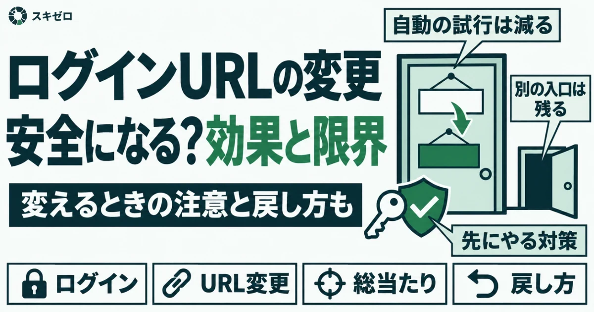
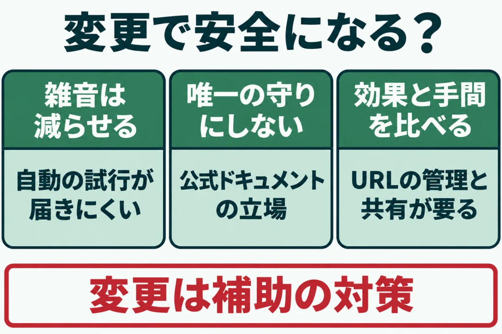
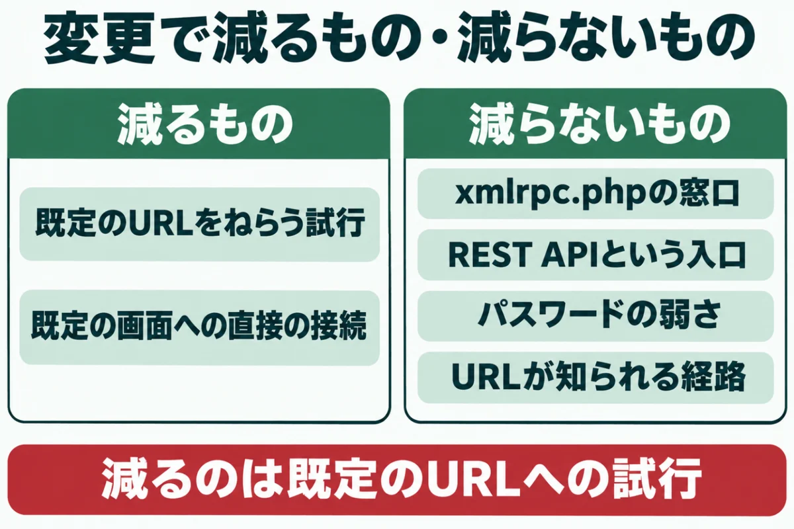
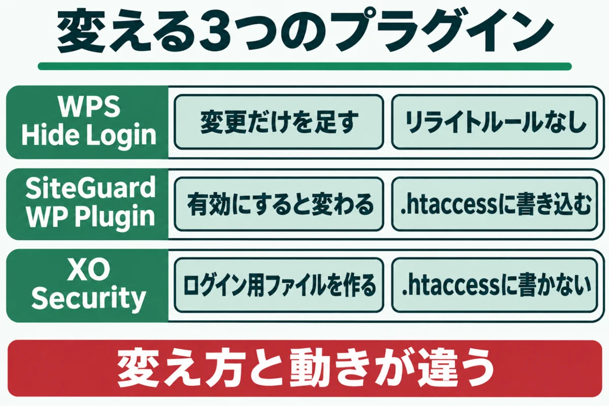
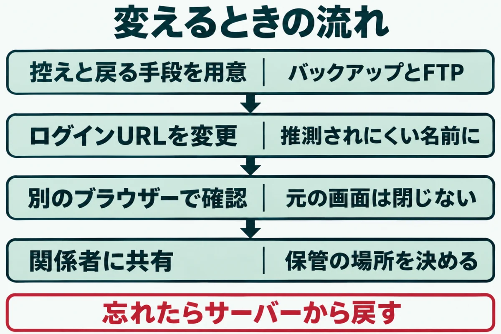
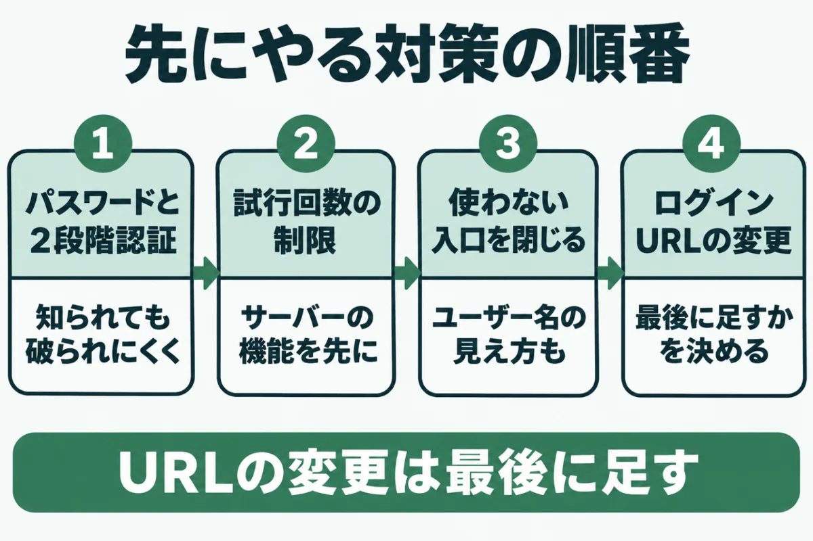

WordPressのログインURLを変更すると安全になる？効果と限界、変えるときの注意点

「wp-login.phpのままだと危ない」と聞いて、ログインURLを変えるべきか迷っていませんか？
ログインURLを変えると、既定のURLをねらう自動の試行は届きにくくなります。ただし、それだけで安全になるわけではありません。
この記事では、変更で減るものと減らないものを、公式の説明をもとに整理しました。変える方法、注意点、先にやる対策の順番も扱います。
プラグインの情報は、2026年11月27日にWordPress.orgの配布ページで確かめました。おすすめの順位づけはしていません。
WordPressのログインURLを変更すると安全になる？公式の考え方

WordPressのログインURLの変更は、攻撃の数を減らすための補助の対策です。変えただけで安全になるわけではありません。
かといって、意味がないとも言い切れないのです。WordPressの公式ドキュメントは、効果と限界の両方に触れています。「変えれば安全」も「意味がない」も、言いすぎだと考えてください。まず、公式の考え方から見ていきましょう。
公式は「雑音は減るが、唯一の守りにしない」と書く
WordPressの公式ドキュメントに、総当たり攻撃の対策をまとめたページがあります。主な守りとして並ぶのは、強いパスワード、2段階認証、試行回数の制限などです。ログインURLの変更は、この一覧に入っていません。一覧のあとに、補足として1文だけ添えられています。内容は、雑音は減らせるが、唯一の守りにしないというものです。ページの最終更新は、2026年10月14日でした。変更そのものを否定していない点も、押さえておきましょう。
隠す対策は、主な作戦にしないのが公式の立場
公式の手引き「Hardening WordPress」には、隠すことで守る方法を扱う節があります。そこでは、隠すことを主な作戦にするのは不確かだと書かれているのです。一方で、情報を隠すと役立つ場面もあるとしています。例に挙がるのは、管理者のユーザー名とデータベースの接頭辞の2つです。ログインURLは、この例に入っていません。隠す対策は、足しにはなるが柱にはならないと読めるでしょう。同じ手引きは、安全対策を「危険をなくすことではなく減らすこと」と説明しました。
変更するかどうかは、効果と手間を比べて決める
変えるかどうかは、得られるものと手間を比べて決めます。得られるのは、既定のログイン画面をねらう自動の試行が届きにくくなることです。失敗の記録や通知が多くて困っているサイトでは、違いを感じやすいでしょう。手間は、新しいURLの管理と共有にかかります。担当者や外注先が多いサイトほど、手間は増えるのです。サーバーの機能でログイン画面への接続をしぼれているなら、急ぐ必要はありません。迷うときは、先にほかの対策を済ませてから考えてください。
WordPressのログインURLの変更で減るものと減らないもの

WordPressのログインURLの変更で減るのは、既定のURLを決め打ちでねらう自動の試行です。wp-login.phpをそのまま開こうとする相手は、ログイン画面にたどり着けなくなります。
一方で、ログイン画面を通らない入口と、パスワードそのものの弱さは変わりません。新しいURLが外に知られる経路もあるのです。3つに分けて見ていきましょう。
減るもの：既定のログイン画面をねらう自動の試行
総当たりの試行の多くは、人の手ではなく自動の仕組みで行われます。SiteGuard WP Pluginの開発元も、大半が機械的な攻撃だと説明しました。その攻撃は、既定のログインページに向かうとされています。URLを変えると、攻撃の対象になる機会を減らせるという考え方です。WPS Hide Loginの配布ページにも、説明があります。wp-login.phpとwp-adminへ、直接は入れなくなるという内容です。既定のURLだけを試す相手は、ログイン画面に届きません。
減らないもの：xmlrpc.phpとREST API、パスワードの弱さ
ログインを試せる入口は、ログイン画面だけではありません。公式ドキュメントは、xmlrpc.phpも総当たりのねらいになりやすいと書いています。ログインURLの変更は、この窓口には届かないのです。REST APIも、アプリケーションパスワードという合鍵で使う別の入口になります。パスワードが弱いままなら、URLを知られたあとの守りが残りません。xmlrpc.phpの扱いは、別の記事で紹介しています。WordPressのxmlrpc.phpとは？止めるべきかの判断と安全な止め方を見てください。
- 参考：Brute Force Attacks｜WordPress Developer Resources
- 参考：Application Passwords｜WordPress Developer Resources
変更後のURLが外に知られる経路
変えたURLは、秘密のまま保てるとは限りません。SiteGuard WP Pluginの初期設定には、注意が要ります。/wp-admin/を開くと、新しいログイン画面へ転送されるのです。設定画面には、この転送を止めるためのチェック欄があります。更新履歴には、URLが漏れる不具合を直した記録も残っていました。WPS Hide Loginは、コメントにログインを求める設定に注意を出します。コメント欄のログインのリンクは隠れないという内容です。メールや引き継ぎの資料から伝わることもあるでしょう。
WordPressのログインURLを変更する方法とプラグインごとの違い

WordPressのログインURLを変更するには、プラグインの機能を使うのが一般的です。本体は、ログイン画面のURLをwp-login.phpと決めています。設定画面に、変えるための項目はありません。
配布ページで機能を確かめた3つを、表にまとめました。数字は、2026年11月27日に確かめたものです。並びは有効インストール数の多い順で、おすすめの順ではありません。
| プラグイン | 有効インストール数 | 最終更新日（協定世界時） | 必要な版 | 検証済みの版 | ログインURLの変え方 |
|---|---|---|---|---|---|
| WPS Hide Login | 200万以上 | 2026年11月12日 | WordPress 4.1以上、PHP 7.0以上 | WordPress 7.2 | ページの要求に割り込む。リライトルールは足さない |
| SiteGuard WP Plugin | 60万以上 | 2026年11月27日 | WordPress 6.0以上 | WordPress 7.2 | Apacheでは.htaccessに書き込む。使えない環境ではURLの末尾が.phpになる |
| XO Security | 3万以上 | 2026年7月19日 | WordPress 6.0以上、PHP 7.2以上 | WordPress 7.0.9 | .htaccessに書き込まない。ログイン用のファイルを作る |
- 参考：wp_login_url()｜WordPress Developer Resources
- 参考：WPS Hide Login｜WordPress.org 日本語
- 参考：SiteGuard WP Plugin｜WordPress.org 日本語
- 参考：XO Security｜WordPress.org 日本語
WPS Hide Login：ログインURLの変更だけを足す
WPS Hide Loginは、ログインURLの変更にしぼったプラグインです。配布ページによると、本体のファイル名は変えず、リライトルールも足しません。ページの要求に割り込み、wp-login.phpとwp-adminへの直接の接続を止める作りです。無効にすれば、サイトは元の状態に戻ると説明されています。配布ファイルを見ると、初期のURLは「login」でした。本体はもともと、/loginを開いた人をログイン画面へ送ります。同じ名前のままにせず、推測されにくい文字列に変えてください。
SiteGuard WP Plugin：有効にした時点でURLが変わる
SiteGuard WP Pluginは、ログインまわりの守りをまとめたプラグインです。「ログインページ変更」は、その機能の1つになります。気をつけたいのは、有効にした時点でログインURLが変わることです。開発元の説明でも、この機能は初期設定でONとされています。初期の名前は、「login_」に5桁の数字が付いた形です。あとから、好きな名前に変えられます。Apacheでは、.htaccessに設定を書き込む作りです。マルチサイトには対応していません。
XO Security：.htaccessに書き込まずに変える
XO Securityも、ログインまわりの機能をまとめたプラグインです。配布ページには、.htaccessに書き込まないとあります。Apacheのほか、LiteSpeedやNginx、IISでも動くという説明です。ログインページの変更では、指定した名前のログイン用ファイルを作る形をとります。そのため、新しいURLの末尾は.phpです。最終更新は2026年7月19日で、3つの中ではいちばん前でした。検証済みの版が今の版に追いついているかも、入れる前に見てください。
WordPressのログインURLを変更するときの注意と戻し方

WordPressのログインURLの変更で起きやすい失敗は、自分がログインできなくなることです。新しいURLを忘れると、管理画面にたどり着けません。
変える前に、戻し方と共有のしかたを決めておきましょう。サーバーのファイルに入る手段があれば、元に戻す道は残ります。キャッシュやほかのプラグインとの相性も、あわせて確かめてください。
変える前に、控えと戻る手段を用意する
変える前に、ファイルとデータベースのバックアップを取ります。次に、サーバーのファイルに入る手段があるかを確かめてください。FTPか、サーバー会社のファイルマネージャーです。公式ドキュメントも、この手段でプラグインを止める方法を載せています。変えたあとは、ログイン中の画面を閉じずに別のブラウザーで試しましょう。新しいURLで入れると分かってから、元の画面を閉じます。SiteGuard WP Pluginは、変更後のURLを管理者にメールで知らせる作りです。
新しいURLを忘れたときの戻し方
忘れたときの戻し方は、プラグインごとに違います。WPS Hide Loginの配布ページは、プラグインのフォルダを外す方法を載せました。外したあとは、wp-login.phpから入れます。SiteGuard WP Pluginは、変更を知らせるメールを探すのが近道でしょう。開発元は、.htaccessの記述とフォルダを消す手順も案内しています。XO Securityは、設定の初期化とログイン用ファイルの削除です。どれも、サーバーのファイルに入れることが前提になります。
- 参考：WPS Hide Login｜WordPress.org 日本語
- 参考：FAQ（SiteGuard WP Plugin）｜EGセキュアソリューションズ
- 参考：XO Security｜WordPress.org 日本語
キャッシュやほかのプラグインとの相性、関係者への共有
相性の注意は、配布ページに書かれています。WPS Hide Loginは、WP Rocket以外のページキャッシュのプラグインに触れました。新しいログインURLを、キャッシュしない対象に加えるという内容です。SiteGuard WP Pluginは、同じ機能をほかのプラグインと併用できないとしています。ログインURLが2つ残るか、ログイン画面が開かなくなるためです。新しいURLは、保守を頼む制作会社にも伝えてください。伝える相手と保管の場所を、先に決めておくと安心でしょう。
WordPressのログインURLの変更より先にやる対策と優先順位

WordPressのログインURLの変更は、ほかの守りを整えたあとの仕上げに向いています。URLを知られても破られない状態を、先に作りましょう。
順番は、パスワードと2段階認証、試行回数の制限、使わない入口の整理です。最後に、ログインURLの変更を足すかを考えます。公式ドキュメントが主な守りに挙げる項目から、先に済ませてください。
先に、パスワードと2段階認証を固める
最初に固めるのは、パスワードと2段階認証です。公式ドキュメントは、強く使い回さないパスワードを守りの一覧の最初に挙げました。次に並ぶのが、すべての管理者への2段階認証です。この2つが整えば、URLを知られても、破られにくい状態になります。弱いパスワードのままURLだけを変えても、土台は弱いままでしょう。2段階認証は本体に入っていないので、プラグインなどで足します。手順は次の記事にまとめました。WordPressのログインに2段階認証を設定する方法｜プラグイン選びと締め出されない準備です。
次に、試行回数の制限とサーバーの機能を使う
次に、失敗が続いた相手を止める仕組みを入れます。公式ドキュメントは、サーバーや手前の段階で止めるよう勧めました。2026年11月時点のエックスサーバーのマニュアルは、国外からの制限の対象を示しています。/wp-adminと/wp-login.phpの2つです。変更後のURLにも制限がかかるかは、書かれていません。変える前に、サーバー会社へ確かめましょう。サーバーとプラグインの使い分けは、次の記事で扱いました。WordPressのセキュリティプラグインは必要？｜サーバーの機能との違いと選び方です。
使わない入口とユーザー名の見え方を整えてから、URLを変更する
続いて、使っていない入口を閉じます。xmlrpc.phpを使っていないなら、止めておきましょう。ユーザー名が外から見えていないかも確かめます。運営者の自社サイトでも、表示名がログイン名のままRSSに出ていました。経路と隠し方は、次の記事にまとめています。WordPressのユーザー名が漏洩する5つの経路と隠し方｜見えているかの確かめ方です。ここまで済んでから、ログインURLの変更を足すかを決めましょう。変えたあとも、ほかの守りは外さないでください。
URLを入れるだけで、ログイン名の見え方やセキュリティ設定など8項目を無料で判定します。無料簡易診断が見るのは、外から見える範囲だけです。ログインまわりの設定の見直しは、対策作業（14,800円から・税込）でお受けしています。
無料で診断するWordPressのログインURLの変更に関するよくある質問
wp-login.phpのままにしておくと、危ないのでしょうか？
既定のURLのままでも、それだけで危ないとは言えません。WordPressの公式ドキュメントは、主な守りの一覧にログインURLの変更を入れていないのです。挙がっているのは、強いパスワード、2段階認証、試行回数の制限などでした。この3つが整っていれば、既定のURLでも守りは重なっています。反対に、どれも入れていないなら、URLより先に整えてください。変更は、そのあとで考えれば間に合うでしょう。
変更後のログインURLは、どんな文字列にすればよいですか？
推測されにくい文字列にします。「login」や「admin」のような、ありがちな名前は避けてください。SiteGuard WP Pluginの開発元も、容易に推測されにくい名前を勧めています。このプラグインで使えるのは、4文字以上の英数字とハイフン、アンダーバーです。会社名やサイト名だけの名前も、避けるのが無難でしょう。決めた名前は、パスワードと同じように控えておきます。
新しいログインURLを忘れて、管理画面に入れなくなりました。どうすればよいですか？
まず、ブラウザーのブックマークと履歴、変更を知らせるメールを探してください。見つからないときは、サーバーのファイルに入って戻します。WordPressの公式ドキュメントには、pluginsフォルダの名前を変える方法があるのです。名前を変えると、すべてのプラグインが止まります。ログインできたら、フォルダの名前を戻して1つずつ有効にしましょう。SiteGuard WP Pluginでは、.htaccessの記述を消す手順も案内されています。不安なときは、制作会社やサーバー会社に相談してください。
プラグインを使わずに、ログインURLを変更できますか？
本体の設定画面には、ログインURLを変える項目がありません。.htaccessなどを自分で書き換える方法は、勧めにくいのです。公式ドキュメントも、大がかりな.htaccessの書き換えを古い手法として挙げました。当てにならず、ほかの機能を壊すことがあるという理由です。URLを変える代わりに、サーバー側でログイン画面をしぼる方法もあります。接続元のIPアドレスで制限する例が、同じページに載っているのです。サーバーの管理画面に同じ種類の機能がないか、先に確かめましょう。
無料の診断で、ログインURLが変更されているかは分かりますか？
スキゼロの無料簡易診断は、ログインURLが変わっているかを調べていません。見ているのは、ログイン名の見え方やWordPress本体の更新など、外から見える8項目です。ログイン名が外から見えていると、鍵の半分を知られた状態になります。あわせて確かめておくと、入口の守りを見直すきっかけになるでしょう。ログインURLそのものは、ブラウザーで/wp-login.phpを開けば確かめられます。変更が効いていれば、ログイン画面は表示されません。
まとめ
WordPressのログインURLの変更は、既定のURLをねらう自動の試行を減らす補助の対策です。公式ドキュメントも、雑音は減るが唯一の守りにしないと書いています。xmlrpc.phpなど、ログイン画面を通らない入口は変わりません。
先に、パスワード、2段階認証、回数制限を整えてください。変える場合は、新しいURLの控えと戻し方を用意してから進めましょう。
まずは、今の状態を知るところから。
URLを入れるだけで、数十秒で判定が出ます。登録はいりません。